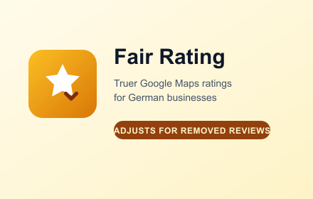

Yet Another Expat
A weekly comedy podcast about what's going on in the world and myself. Recorded from Berlin.
Berlin. Podcasts, writing, drawing, code.
A list of the things I make and where to find them, in case you are interested or I die. Or both.
A weekly comedy podcast about what's going on in the world and myself. Recorded from Berlin.
Monthly podcast for Cosmo sta Ellinika on Radio COSMO (ARD) — Greek-language stories about living in Germany.

A Chrome extension that fixes Google Maps ratings for businesses that have mass-removed negative reviews under German defamation law. Reads Google's own disclosure, recalculates the rating, shows it as a badge.
Σκέφτομαι και Γράφω — a personal blog of travel guides and quieter reflections from my thirties. In Greek.
Science news, short and fun. In Greek. An older project — hasn't been updated in almost a decade, but the archive is still there.
Drawings, posted as a reminder to draw more.